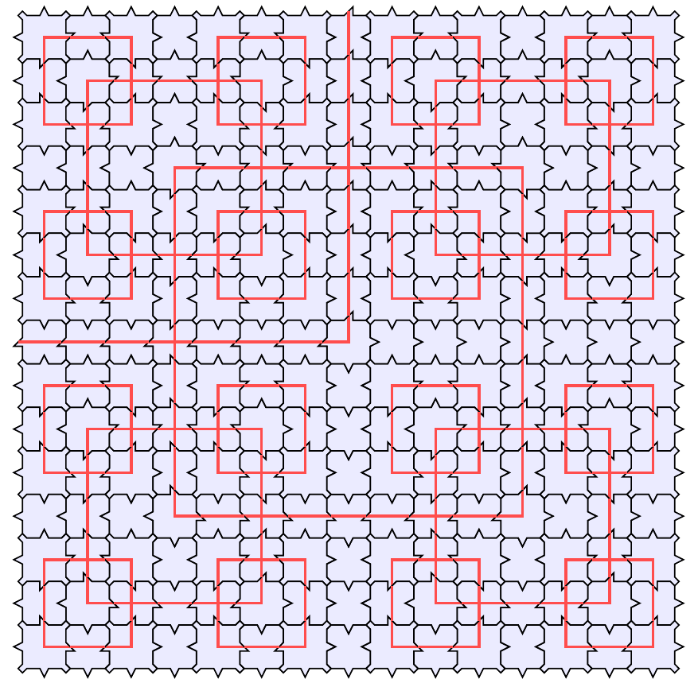

Talks
Mini courses
Dinámica simbólica sobre los grupos, [in spanish] Ciudad de México, Escuela de invierno en grupos y dinámica en México, january 2018.
Posters
The domino problem for fractal subsets between $\mathbb{Z}$ and $\mathbb{Z}^2$, Paris, Journées GDR-IM, january 2016.
Effectiveness in finitely generated groups, Chile, Workshop on Symbolic Dynamics on finitely presented Groups, december 2014.
